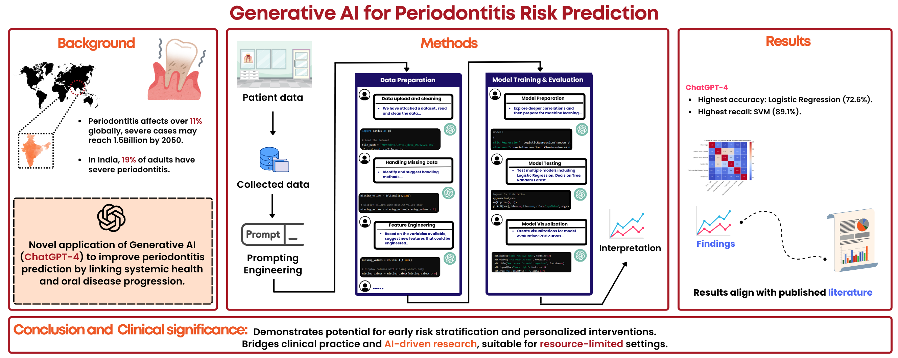

Original Research Article
Harnessing generative artificial intelligence for periodontitis prediction: a machine learning approach integrating systemic health indicators for precision oral health in resource-limited settings
Department of Molecular Biology and Bioinformatics, Tripura University (A Central University), Agartala, Tripura, India
© 2026 Sarkar, Ghosh and Bhattacharjee. Open access under CC BY 4.0. †These authors contributed equally. *Corresponding author.

Abstract
Objective: To develop a reproducible generative artificial intelligence (GenAI)-driven workflow for periodontitis risk stratification using systemic and demographic indicators, and to validate its ability to identify well-established predictors in resource-limited settings.
Materials and methods: This retrospective study analyzed data from 416 dental hospital patients. Using systematic prompt engineering, GenAI was employed to automate data preprocessing, correlation analysis, and development of six machine learning models (Logistic Regression, Decision Tree, Random Forest, Gradient Boosting, Support Vector Machine, and K-Nearest Neighbors) to predict periodontitis severity. Severe periodontitis was defined as a Community Periodontal Index (CPI) score of 4. Model validation used an 80–20 data split, fivefold cross-validation, and McNemar's Test.
Results: The GenAI-driven pipeline successfully automated the data-analysis workflow. Models achieved modest discriminatory power using systemic indicators alone (AUC 0.48–0.57). Logistic Regression demonstrated the most balanced performance (72% accuracy, 74% F1-score), while Support Vector Machine (SVM) showed superior sensitivity (89%) for screening severe cases. Feature-importance analysis identified age (score = 0.233) and blood sugar level (score = 0.209) as the strongest predictors, consistent with established periodontal risk factors. Composite systemic risk scores exhibited a stronger correlation with periodontitis severity than any individual health parameter.
Conclusion: While systemic indicators alone provided limited diagnostic precision, the GenAI-driven workflow effectively automated the data process with end-to-end model development. The high sensitivity of the SVM model suggests potential utility as a preliminary screening tool to flag at-risk individuals for prioritized clinical examination, particularly in settings where dental radiography is unavailable.
Clinical relevance: This research demonstrates the potential of GenAI to facilitate efficient and interpretable risk stratification rather than definitive diagnosis. The workflow provides a replicable, privacy-preserving framework that lowers the technical barrier to applied machine learning in resource-limited periodontal care.
Keywords
- generative artificial intelligence
- machine learning
- periodontitis
- predictive modeling
- systemic health
- prompt engineering
- periodontal risk stratification
1. Introduction
Artificial intelligence (AI) is being increasingly integrated into biomedical research to streamline processes, reduce human error, and provide new insights. Generative AI (GenAI) has seen significant advancements in recent years, with one prime example being OpenAI's Generative Pretrained Transformer 4 (GPT-4). Using deep learning techniques, ChatGPT is trained on extensive datasets comprising 175 billion parameters to generate responses that resemble human conversation based on user input. Research has investigated the use of ChatGPT in domains such as data science, where it facilitates the automation of data cleansing, model training, and result analysis. In some cases, Advanced Data Analysis using ChatGPT has surpassed human-constructed clinical outcome prediction algorithms, and clinical data-processing efficiency can be improved by bridging machine learning developers, physicians, and researchers.
In a previous study, the GPT-4o model augmented by retrieval-augmented generation achieved approximately 90% accuracy in detecting tumor subtypes from histopathology reports by integrating World Health Organization (WHO) guidelines. In ophthalmology, ChatGPT achieved an F1-score of 80.05% when classifying retinal vascular diseases from Chinese-language fluorescein-angiography reports using English prompts, nearly matching the performance of ophthalmology interns while revealing important cross-lingual considerations in medical AI. This trend extends to dental applications, where convolutional neural networks (CNNs) already outperform traditional methods in detecting periodontitis from intraoral images. However, a significant gap remains in addressing the inherent complexity of biological data structures, such as genomic sequences and metabolic pathways, where long-range dependencies often hit context-window limitations. The code-interpreter functionality of ChatGPT enables natural-language interaction to streamline data-analysis workflows - data loading, exploration, model development, and feature-importance analysis - thereby allowing researchers to focus on higher-level tasks.
Periodontitis, a chronic inflammatory disease caused by the accumulation of highly pathogenic biofilms on teeth, is characterized by the progressive destruction of supportive periodontal tissues over time. Without treatment, this oral infectious disease can lead to tooth loss. Beyond oral health, growing evidence links periodontitis to systemic conditions including diabetes, cardiovascular disease, and arterial stiffness. According to the Global Burden of Disease Study, severe periodontitis affects 11% of the global population aged 15 and older, and an estimated 1.5 billion individuals are projected to have severe periodontitis by 2050. In India, the burden is particularly high, with approximately 51% of adults suffering from periodontal disease. Despite this prevalence and its systemic implications, traditional diagnostic methods remain time-consuming and lack the interpretability required for seamless coordination between clinicians and data scientists.
Machine learning has been applied to periodontitis prediction, but it faces three practical limitations, particularly in resource-limited settings. In low- and middle-income countries, conventional ML pipelines require specialized programming expertise that is not often co-located with clinical data custodians; it is rarely possible to independently audit or reproduce the sequence of preprocessing, feature-engineering, and modeling steps; and the clinician–data-scientist interface lacks a natural-language intermediary, limiting interpretability and iterative refinement by domain experts. GenAI-driven workflows offer a potential solution to all three limitations simultaneously through natural-language prompt engineering, enabling non-programmers to drive end-to-end pipelines. To address these scalability and interpretability gaps, this study aimed to develop and evaluate an interpretable machine learning framework to predict periodontitis risk by leveraging available systemic health markers, lifestyle factors, and demographic data - identifying the most significant predictors of severity and providing a scalable approach for precision oral health in real-world clinical settings.
2. Results
2.1 Demographic and clinical parameter distributions
Exploratory data analysis (EDA) revealed comprehensive patterns within the patient cohort (n = 416). The age distribution showed a multimodal pattern with a primary peak around 55 years and secondary clusters at 40 and 60–70 years. CPI scores exhibited distinct trimodal clustering at 2.0, 3.0, and 4.0, representing categorically different levels of periodontal disease severity. Blood pressure measurements showed systolic readings centered around 130–140 mmHg (IQR 120–160) and diastolic values of 75–80 mmHg (IQR 70–90), suggesting a substantial portion of patients had prehypertensive or hypertensive values. Blood sugar levels displayed a pronounced multimodal distribution with peaks near 130, 170, and 195 mg/dL, indicating normoglycemic, prediabetic, and diabetic subgroups respectively.
2.2 Correlation analysis
Pearson correlation analysis revealed strong positive correlations between systolic and diastolic blood pressure (r = 0.54, p < 0.001) and between systolic blood pressure and clinical hypertension diagnosis (r = 0.50, p < 0.001). Notably, periodontitis severity was largely independent of measured systemic health indicators (all |r| < 0.02, p > 0.05), despite affecting 58% of the study population - a finding potentially explained by oral health behaviors (68% of periodontitis patients reported no regular flossing) and localized oral factors rather than systemic conditions. Importantly, the composite Systemic Disease Risk Score demonstrated a stronger association with periodontitis (r = 0.18, p < 0.05) than any individual parameter, suggesting cumulative risk factors provide better predictive value than isolated clinical measurements.
2.3 Model performance
Logistic Regression and Decision Tree classifiers each achieved 72% accuracy. Logistic Regression demonstrated balanced metrics (75% precision, 74% recall, 74% F1-score), while the Decision Tree achieved 74% precision, 76% recall, and a 75% F1-score. Although SVM showed slightly lower accuracy (71%), it demonstrated high sensitivity (89% recall, 77% F1-score), valuable for identifying true positive cases of severe periodontitis. Random Forest reached 67% accuracy (72% F1), Gradient Boosting 69% (72% F1), and KNN performed poorest at 61% accuracy (67% F1). By AUC, SVM achieved the best discrimination (0.57), followed by RF (0.56) and KNN (0.55). After Bonferroni correction, SVM's recall (89%, 95% CI 81%–94%, p < 0.001) was significantly higher than all other models.
2.4 Feature importance
Random Forest feature-importance analysis identified age as the most influential predictor (importance = 0.233), followed by blood sugar (0.209), systolic blood pressure (0.187), diastolic blood pressure (0.166), and cardiovascular disease (0.140). The prominence of age aligns with established clinical knowledge that periodontitis risk increases with advancing age. Direct physiological parameters (blood pressure measurements) ranked above binary diagnostic classifications, suggesting they may provide more sensitive predictions. These findings indicate that routine health screenings capturing age, blood sugar, and blood pressure could help identify patients at elevated periodontitis risk, enabling earlier and more targeted preventive strategies.
3. Conclusion
This study examined the use of GenAI to facilitate data preprocessing and the development of machine learning models for predicting periodontitis. Using the retrospective dataset, the generated models achieved moderate predictive accuracy, and feature-importance analysis identified age and blood sugar as the top two predictors - consistent with established risk factors for periodontitis progression.
These findings should be regarded as preliminary. As an in-silico analysis of a retrospective dataset, the results are hypothesis-generating, and the models are not clinically validated; their performance within this dataset does not ensure real-world clinical applicability. The study ultimately redirects attention from the pursuit of a singular 'systemic predictor' toward demonstrating a strong, automated, GenAI-driven workflow - a replicable pipeline for data processing and modeling. Future investigations should implement this identical GenAI workflow with multimodal datasets, merging systemic risk scoring with localized clinical metrics or radiographic imaging to connect systemic risk factors with local disease presentation and maximize AI's capabilities in automated risk screening and clinical data processing.
How to cite
Sarkar, A., Ghosh, E., & Bhattacharjee, S. (2026). Harnessing generative artificial intelligence for periodontitis prediction: a machine learning approach integrating systemic health indicators for precision oral health in resource-limited settings. Frontiers in Dental Medicine, 7, 1778372. https://doi.org/10.3389/fdmed.2026.1778372